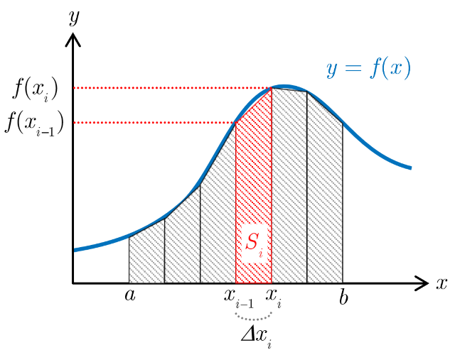

【台形公式による数値積分】

台形公式
台形公式
加速度が数値データとして得られている場合，速度は数値積分で近似的に計算することになる．本解析アプリでは，台形公式による数値積分を採用している．$x$の関数$y=f(x)$について，区間$[a,b]$における$n+1$個の点$(x_i,\ f(x_i))$が与えられている場合（$i=0\sim n,\ x_0=a,\ x_n=b$），台形公式によって数値積分を行うと以下のようになる．区間$[a,b]$を$n$分割した$i$番目の小区間$[x_{i-1},x_i]$の面積は，台形の面積の公式より $$S_i=\frac{1}{2}\left\lbrace f(x_{i-1})+f(x_i)\right\rbrace\Delta x_i\ \ (i=1\sim n)$$ となる．ここで，小区間幅$\Delta x_i=x_i-x_{i-1}$である．よって，小区間幅$\Delta x_i$が十分小さければ，区間$[a,b]$の積分は $$\int_{a}^{b}f(x)dx\approx S_1+S_2+\cdots+S_n=\sum_{i=1}^{n}S_i$$ と近似できる．